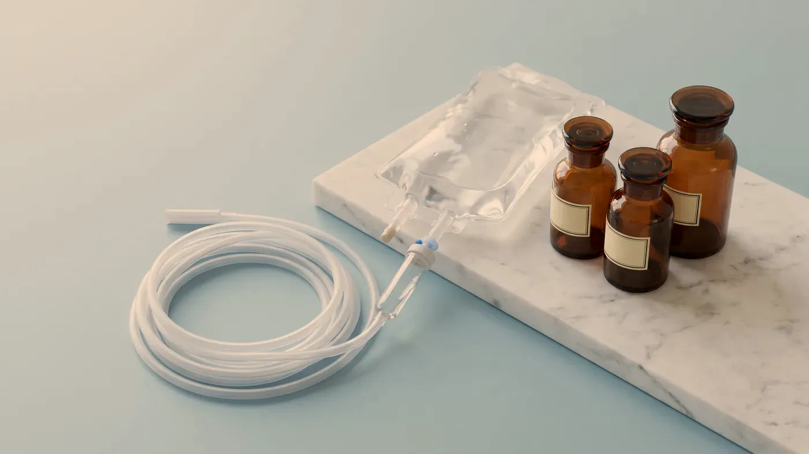

Enjeksiyon Uygulamaları · Cilt Kalitesi
Küçük hacimler, çok sayıda nokta: mezoterapi
Mezoterapide, ihtiyaca göre hazırlanan bir solüsyon derinin içine çok sayıda küçük noktadan damla damla bırakılır. Her noktaya düşen miktar çoğunlukla 0,01 ile 0,05 mililitre arasındadır; böylece madde vücudun geri kalanına dağılmadan, ihtiyaç duyulan katmanda kalır. Yüz, boyun, dekolte ve el sırtından hangisinin programa gireceği muayenede ve öykünüz dinlendikten sonra belirlenir.
Tanım ve sınırlar
Mezoterapide cilde ne verilir, nasıl etki etmesi beklenir?
Bir vitamini ağızdan almak ya da serumla damardan vermek ile onu doğrudan derinin içine bırakmak farklı şeylerdir. Mezoterapide ikinci yol izlenir: çok ince bir iğneyle, birbirine birkaç milimetre uzaklıktaki noktalara verilen solüsyon derinin orta katmanında kalır ve dolaşıma ancak çok az bir kısmı geçer.
Her kişiye aynı karışım uygulanmaz. Solüsyonlarda sıklıkla serbest (çapraz bağsız) hyalüronik asit bulunur; buna B vitaminleri, aminoasitler, çinko ve silisyum gibi mineraller ya da antioksidan maddeler eklenebilir. Karışımı, cildinizde gördüğü soruna ve öykünüze göre hekim belirler. Hedeflenen, cildin nemini daha uzun tutması ve yüzeyinin biraz daha düzgün görünmesidir; değişiklik sınırlıdır ve yanıt kişiden kişiye değişir.
Dolgunluk vermez: solüsyon su gibi akışkandır; çökmüş bir bölgeyi kabartmaz. Toparlamaz: gevşemiş ve aşağı inmiş dokuyu yerine kaldırmaz; sarkma şikâyetinde başka seçenekler konuşulur.
Mimikleri etkilemez: kasların hareketine dokunmadığı için alın ve göz çevresi çizgilerinde botulinum toksin uygulamasının yerini tutmaz. Cilt hastalığını iyileştirmez: egzama, rozasea ya da aktif akne gibi tablolarda önce altta yatan sorun ele alınır.
Bu sayfada yüz, boyun, dekolte ve el sırtına yapılan cilt mezoterapisini anlatıyoruz. Saçlı deriye yönelik uygulama, saç dökülmesinin nedenleri araştırıldıktan sonra ayrıca planlanır ve saç mezoterapisi sayfasında ele alınır; iğne kullanılmadan yapılan yöntem için iğnesiz mezoterapi sayfasına bakabilirsiniz. Cildiniz mat ve kuru görünüyorsa ciltte nem kaybı ve donukluk, yüzeyi pürüzlü ve gözenekleri belirginse gözenek ve cilt dokusu sayfası yol gösterir. Bölgelere göre planlama: yüz, boyun ve dekolte, el.
Süreç
Mezoterapi programı nasıl planlanır?
Program bir kez yazılıp bırakılmaz: her kontrolde cildinizin nasıl yanıt verdiğine bakılır, karışım ya da aralık gerekirse değiştirilir.
Seans aralığı
İlk dönemde seanslar iki–dört haftada bir yapılır; cilt yanıt verdikçe aralık açılır ve bakım seansları konuşulur.
Çubuklar oransal bir simgedir; size özel takvim muayenede netleşir.
- Değerlendirme: ilaçlarınız, geçmiş hastalıklarınız, gebelik olasılığı ve önceki enjeksiyonlara verdiğiniz tepkiler sorulur; cildiniz iyi ışık altında incelenir.
- Karar ve onam: neyin beklenip neyin beklenmeyeceği, başka yollar ve hiçbir şey yapmamak da konuşulur; yazılı onam alınır. İlk görüşmede uygulama yapmak zorunlu değildir.
- Uygulama günü: bölge dezenfekte edilir, istenirse önceden uyuşturucu krem sürülür; iğneler ve diğer malzemeler steril ve tek kullanımlıktır.
- Sonrası: bölgeyi soğutmanız, güneşten korumanız ve elinizle dokunmamanız önerilir; bir sonraki görüşmenin tarihi verilir.
Bu başlıkların bir kısmı kalıcı değil, geçici bir erteleme nedenidir; tablo düzeldiğinde karar yeniden gözden geçirilir.
- Gebelik ve emzirme dönemi: bu süreçte estetik amaçlı enjeksiyon planlanmaz.
- Bölgede aktif enfeksiyon: uçuk, kıl dibi iltihabı, impetigo ya da iltihaplı sivilce varsa bölge iyileşene kadar beklenir.
- İçerikteki maddelere karşı bilinen duyarlılık: benzer bir enjeksiyondan sonra belirgin kızarıklık, şişlik ya da başka bir tepki yaşadıysanız bunu muayenede söyleyin.
- Dengesiz seyreden kronik hastalıklar ve bağışıklık sistemini baskılayan ilaçlar: kan şekeri düzensiz diyabet, otoimmün hastalıklar, kemoterapi ya da yüksek doz kortizon tedavisi sürerken zamanlama ayrıca konuşulur.
- Kan sulandırıcılar ve pıhtılaşma sorunları: bu ilaçları kullanıyorsanız durum hekiminizle konuşulur; ilacınızı kendiliğinizden bırakmayın.
- Yeni geçirilmiş enfeksiyon, aşı ya da diş tedavisi: enjeksiyon sonrası görülen bazı geç tepkilerle ilişkilendirildiğinden uygulama tarihi buna göre seçilir.
- Gerçekçi olmayan beklenti: hacim, sıkılaşma ya da çizgilerin silinmesi gibi mezoterapinin veremeyeceği bir sonuç bekleniyorsa uygulama önerilmez.

Temsilî görsel · yapay zekâ ile üretildi“Şişenin üzerindeki ad değil, içindekiler önemlidir. Size uygulanacak her bileşeni adıyla söyler, dosyanıza yazarız.”
Cildinizi yakından görelim
Hangi karışımın, hangi aralıkla uygulanacağı muayeneden sonra belli olur.
Randevu talebiRiskler
Uygulamadan sonra neler olabilir, ne zaman beklemeden başvurmalısınız?
İğneyle yapılan her uygulamada beklenmedik bir durum yaşanabilir. Hangi bulgunun olağan, hangisinin dikkat gerektiren olduğunu ayırabilmeniz için bunları gruplara ayırdık; çoğu kişide bunların yalnızca bir kısmı görülür.
Sık görülen, kısa süreli
Her iğne noktasında kısa süreli kızarıklık ve küçük kabarcıklar görülür; bunlar çoğu kişide aynı gün söner. Batma hissi ve dokununca hassasiyet olabilir. Morluk gelişirse sararıp kaybolması bir haftayı bulabilir.
Daha az görülen
Birkaç gün süren ödem, kaşıntı ya da iğne izlerinde ince kabuklar. Esmer ve koyu tenlerde iz yerlerinde geçici bir kararma kalabilir; genellikle zamanla açılır.
Nadir ama önemli
Deride iltihaplanma ya da apse, içerikteki bir maddeye karşı gelişen duyarlılık tepkisi, solüsyonun bir damara girmesiyle dolaşımın bozulması ve kalıcı iz. Seyrek görülürler, ancak tanınmaları önemlidir.
Geç dönemde
Uygulamadan haftalar, hatta aylar sonra ortaya çıkan şişlik ya da ele gelen küçük sertlikler bildirilmiştir. Böyle bir değişiklik fark ederseniz bölgenin muayenede incelenmesi gerekir.
Saatler içinde azalmak yerine artan ağrı, derinin bembeyaz kesilmesi ya da mor lekeli bir görünüm alması, büyüyen şişlik, ateş, görmede değişiklik, nefes almakta zorlanma ya da dilde şişme olursa kontrol gününü beklemeyin. 0539 933 08 08 numarasından bize ulaşın ya da en yakın acil servise gidin; tablo ağırsa 112’yi arayın.
Düzen
Seanslar hangi aralıkla yapılır, etkisi ne kadar kalır?
Seans düzeni
Kaç seans gerektiği, şikâyetin türüne ve cildin ilk seanslara verdiği yanıta bağlıdır. Tipik bir planda ilk dönemde iki–dört haftada bir görüşülür; cilt yanıt verdikçe seansların arası açılır ve bakım aralıkları konuşulur.
Ne kadar sürer?
Güneşten korunmayan, sigara içilen ya da evde düzenli bakım yapılmayan bir ciltte kazanım daha kısa sürer. Yaş ve cildin başlangıçtaki durumu da belirleyicidir. Mezoterapinin katkısı geçicidir ve aylar içinde azalır. Sonuçlar kişiden kişiye değişir.
Değişiklik görülmezse
Birkaç seansa rağmen bir fark göremiyorsanız aynı uygulamayı sürdürmek yerine durup yeniden bakarız. Bu tablo çoğunlukla yöntemin kendisinden değil, şikâyetin altında başka bir nedenin yatmasından kaynaklanır; o neden ayrıca araştırılır.
Buradaki bilgiler okuru bilgilendirmek içindir; size özel bir tanı ya da tedavi önerisi içermez. İğneyle yapılan her işlem gibi mezoterapinin de riskleri vardır ve herkese uygun değildir. Size uygulanıp uygulanmayacağı muayenede netleşir. Sonuçlar kişiden kişiye değişir.
Mezoterapiyi Uzm. Dr. Rahmi Cebeci kendisi uygular; çalışma alanı, uzmanlığı ve Sağlık Bakanlığı onaylı medikal estetik sertifikasıyla sınırlıdır. Bu alana girmeyen bir talep için hangi uzmanlık dalına başvurabileceğinizi ayrıca anlattık.
Sık gelen sorular
Merak ettiğiniz soruya dokunun, yanıtı burada açılsın
Bir adım ötesi
Cildinize uygun planı birlikte kuralım
Öykünüzü ve cildinizi değerlendirmeden mezoterapinin sizin için doğru seçenek olup olmadığını söyleyemeyiz.
Metni hazırlayan ve tıbbi açıdan gözden geçiren: Uzm. Dr. Rahmi Cebeci (Aile Hekimliği Uzmanı · Medikal Estetik Sertifikalı).
Buradaki anlatım herkese yöneliktir; size özel bir teşhis ya da tedavi planı sunmaz, muayenenin yerini tutmaz. Her uygulamanın etkisi kişiye göre farklı olur.